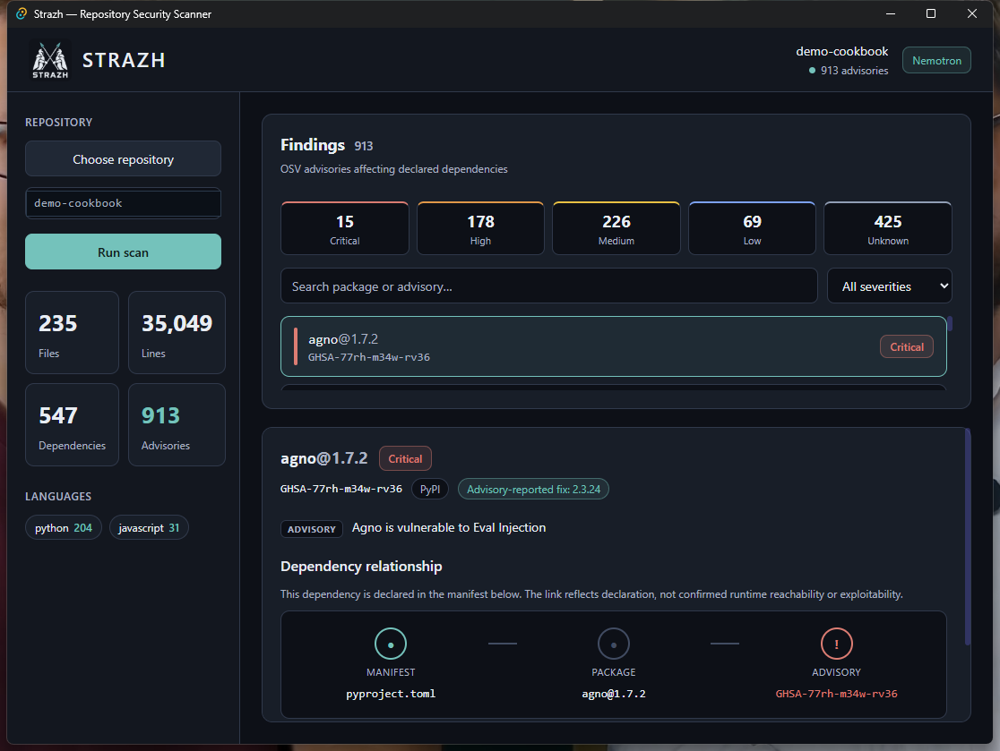
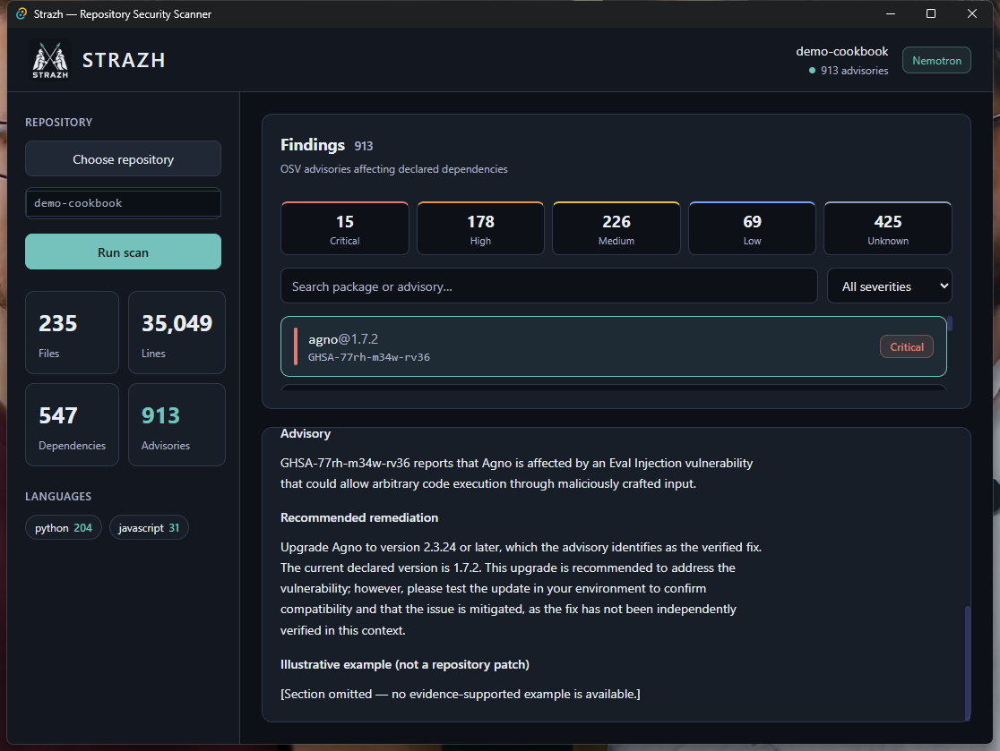
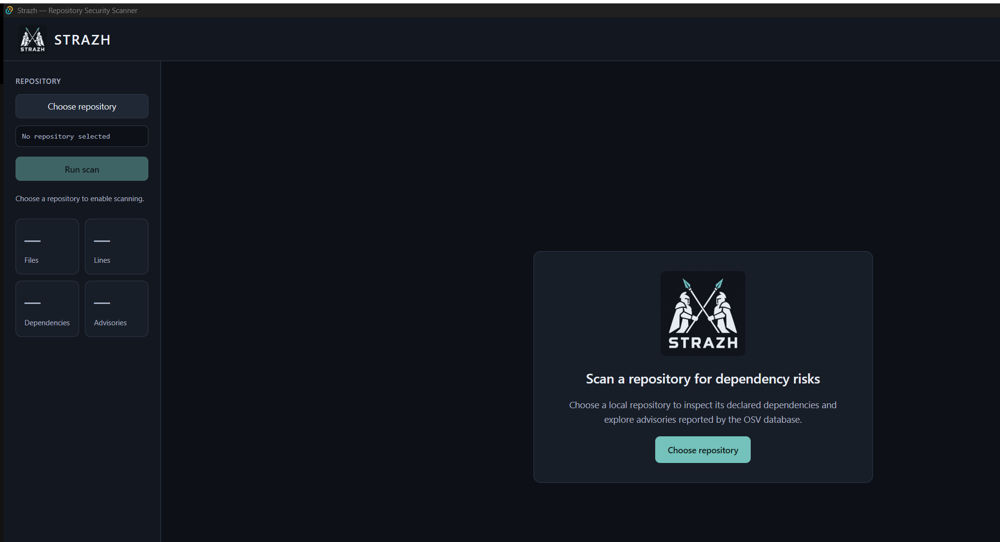

1
Scan
Reads the dependencies declared in your manifests (Cargo.toml, package.json, requirements.txt, pyproject.toml, go.mod) and queries the live OSV database for known advisories.
Strazh scans your repository's declared dependencies against the live OSV database, shows the manifest → package → advisory path, and uses an NVIDIA Nemotron model on Nebius Token Factory to suggest a grounded fix you can apply locally — with one-click Undo.
For developers and small teams who want to find and fix supply-chain issues without waiting for a security review.
Free to scan. Windows installer available now — macOS and Linux builds are planned.

Demo
A short walkthrough: scan a repository, read the attack path, generate a Nemotron suggestion, and apply the fix locally.
How it works
Strazh runs the whole loop locally. Nothing is pushed, committed, or opened as a pull request.
Reads the dependencies declared in your manifests (Cargo.toml, package.json, requirements.txt, pyproject.toml, go.mod) and queries the live OSV database for known advisories.
For each finding, shows the manifest → package → advisory relationship: which file declares the vulnerable dependency, and the advisory it matched.
An NVIDIA Nemotron model on Nebius Token Factory produces remediation guidance grounded in the advisory metadata — never your source code.
When the advisory provides a fixed version, apply a single, conservative version bump to the declaring manifest on disk — reversible with one click.


What you get
Every declared dependency with a concrete version is checked against the OSV advisory database in real time — no stale bundled snapshots.
Critical, High, Medium, Low, and Unknown totals with a recommended-actions list that ranks by severity and shared-package blast radius.
Advisory-grounded fix guidance from NVIDIA Nemotron on Nebius Token Factory, generated on demand and clearly labeled as AI guidance.
Rewrites exactly one dependency version in the declaring manifest, pinning to the advisory's fixed version — with instant Undo.
No accounts, no cloud sync. Your source never leaves your machine. Only advisory metadata is sent to OSV and Nemotron.
Findings are declaration-based, not proof of runtime reachability. Strazh tells you what it checked and what it can't confirm.
Pricing
Scanning, findings, attack paths, and AI suggestions are free forever. Pro unlocks one-click local Apply fix (with Undo).
Everything you need to find and understand risk.
Everything in Free, plus apply fixes in one click. $249/year (save ~28%).
SZ1-…).Already downloaded Strazh? You don't need to reinstall — just add your key in About → License.
Download
Free to download and scan. Windows x64 installers from the latest GitHub release — verify the SHA-256 before running.
Windows 10/11 (x64). Microsoft Edge WebView2 runtime is required — it's preinstalled on current Windows, and the setup offers to fetch it if missing.
Strazh is built on Tauri, so macOS and Linux builds are on the roadmap. Want one sooner? Open an issue on GitHub and let us know your platform.
Prefer to build it yourself? Clone the repo and run
npm run tauri build.
Honest by default
This matches the current app behavior. We'd rather be precise than oversell.
A finding means a declared dependency matches an OSV advisory for the scanned version. It does not prove the vulnerable code is reached or exploitable at runtime.
Nemotron suggestions are advisory-grounded guidance, not a verified fix tested against your project. Review and test before relying on them.
It rewrites one dependency version in one manifest, locally. If a package appears more than once or uses a complex/workspace form, it refuses and asks you to edit manually.
No accounts, no cloud sync, and no automatic pull requests. Everything happens on your machine. Scanning and generating guidance never write to your project.
Download Strazh, point it at a repository, and see what's hiding in your dependencies.